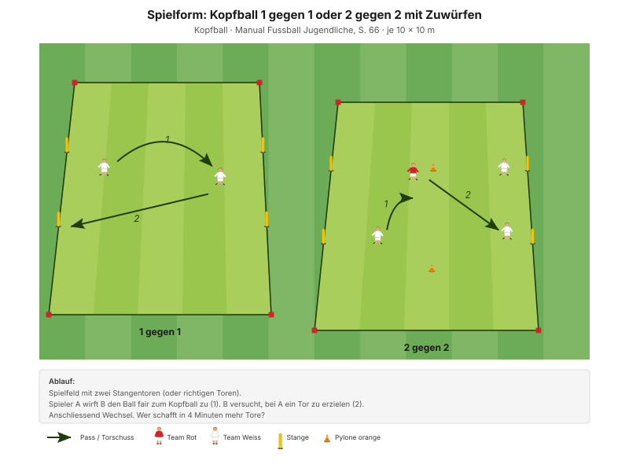
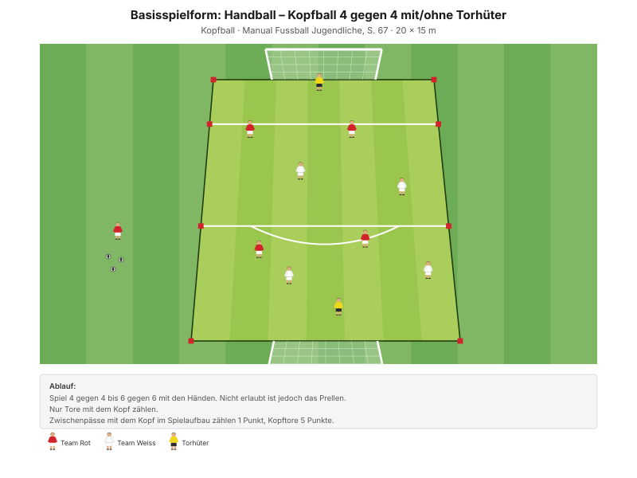

Der Kopfball ist neben dem Torschuss die zweite Abschlusstechnik des Manuals – und die einzige, die bei der D7b bisher nie trainiert wurde. Heute geht es um die Grundtechnik: zum Ball gehen statt auf ihn warten, mit der Stirn treffen, den Nacken fest.
"Die Spieler kennen die Bewegungsmerkmale des offensiven Kopfballs aus dem Stand und mittels ein- und zweibeinigen Absprungs und wenden die Grundtechniken im Spiel an." Ziel "Kopfball", Manual Fussball Jugendliche, S. 66
Alle Kopfballformen des Manuals arbeiten mit Zuwürfen aus kurzer Distanz – keine Flanken, keine langen Bälle, keine Abschläge. Die Basisspielform ist sogar ein Handballspiel, bei dem nur Kopftore zählen. Das ist kein Zufall, sondern die altersgerechte Bauweise: geringe Ballgeschwindigkeit, planbare Flugbahn, der Spieler bestimmt den Zeitpunkt selbst.
Der SFV-Lernbaustein geht noch weiter und schaltet als einziger drei Präventionsübungen zwischen die Wiederholungen statt zwei – mit einem fünften Bereich: Kopf und Nacken. Der wird heute nicht weggelassen.
| Zeit | Min | Teil | Inhalt |
|---|---|---|---|
| 0–4 | 4 | Besammlung | Thema ansagen, Gruppen einteilen |
| 4–16 | 12 | E1 | Kopfbälle im Kreis · Big 4 zwischen den Wiederholungen |
| 16–22 | 6 | E2 | Handball-Kopfball |
| 22–30 | 8 | E3 | Kopfball mit Slalomsprint (Explosivität) |
| 30–45 | 15 | H1 | Kopfball 2 gegen 2 mit Zuwürfen |
| 45–48 | 3 | Pause | Trinken, Umbau |
| 48–70 | 22 | H2 | Handball–Kopfball 6 gegen 6 |
| 70–82 | 12 | Abschluss | Freies Spiel 5 gegen 5 plus 2 Torhüter |
| 82–90 | 8 | Ausklang | Cool-down, zwei Entwicklungsfragen, Verabschiedung |
| Total | 90 |
Einstieg 26 · Hauptteil 37 · Abschluss 20 Min. – nach dem Trainingsschema des Manuals (S. 43).
Wenig Aufbau: Der Einstieg findet im Mittelkreis statt, H1 auf drei kleinen Feldern, H2 und der Abschluss auf dem grossen Feld.
Eigene Skizze · Platzaufteilung
Nur einmal aufbauen – der Mittelkreis des Einstiegs liegt neben dem späteren Spielfeld.
12 Minuten · Mittelkreis · alle 12 Spieler
3 Wiederholungen à 1'30''–2' – zwischen den Wiederholungen je drei Präventionsübungen (siehe unten).
"Stabilität des Rumpfes – TE-Sprünge – TE-Kopfball" Coaching Phase 1, SFV-Lernbaustein "Einstieg TE: Kopfball"
Je drei Übungen zwischen den Wiederholungen, 25 Sekunden pro Übung. Der Lernbaustein Kopfball ist der einzige mit einem fünften Bereich – die beiden Nackenübungen sind Pflicht, nicht Kür.
| Bereich | Übung | Worauf achten |
|---|---|---|
| Fussgelenk | Einbeinsprünge mit Drehung | Das Knie befindet sich über der Fussspitze und zeigt in dieselbe Richtung. |
| Knie | Miniband Side Steps | Miniband immer unter Spannung halten. |
| Hüfte | Dead Bug | Kinn zur Brust ziehen, damit der Rücken flach und in Kontakt mit dem Boden bleibt. |
| Hamstrings | Standwaage mit Partner | Keine Rotation bei den Schlägen auf den Ball zulassen. |
| Kopf und Nacken | Kopfbewegungen | Kopf in alle Richtungen bewegen: rechts–links, vorne–hinten, Halbkreis. |
| Kopf und Nacken | Statische Nackenstärkung | Mit Partner durchführen, der den Ball hält. Spannung im Nacken und im ganzen Körper. |
"Arbeit mit Zeitvorgaben – nicht mit Anzahl Wiederholungen." Prinzip Körperstabilität, Manual Fussball Jugendliche, S. 75
6 Minuten · 3 Wiederholungen à 1'30''–2'
"Stabilität des Rumpfes – TE-Sprünge – TE-Kopfball" Coaching Phase 2, SFV-Lernbaustein "Einstieg TE: Kopfball"
Warum mit der Hand gespielt wird: Der Zuwurf ist immer kontrolliert, und der Spieler bestimmt selbst, wann und wie er zum Ball geht. Genau darum ist Handball-Kopfball die sicherste Form, viele Wiederholungen zu bekommen.
8 Minuten · 2 Bahnen · Paare bilden
| Parameter | Vorgabe |
|---|---|
| Distanz | 15–30 m |
| Wiederholungen | 3 |
| Pause zwischen Wiederholungen | 1/15 (Belastung × 15) |
| Serien | 3 |
| Pause zwischen Serien | 1'30''–2' |
"Erholungszeit: 10- bis 20-fache Dauer der Belastungszeit, abhängig von der Laufdistanz. Vollständig erholen zwischen den Wiederholungen." Prinzipien Explosivität, Manual Fussball Jugendliche, S. 72
Der Kopfball steht hier am Anfang der Belastung, nicht am Ende – ein müder Nacken ist der schlechteste Zeitpunkt für Kopfballtechnik.
15 Minuten · 3 Felder à 10 × 10 m · alle 12 Spieler
Manual-Vorlage · Diagramm 31 "Kopfball 1 gegen 1 oder 2 gegen 2 mit Zuwürfen" (S. 66)

Drei Felder à 4 Spieler – alle 12 sind gleichzeitig beteiligt.
"Spieler/in A wirft B den Ball fair zum Kopfball zu. B versucht, bei A ein Tor zu erzielen." Spielform, Manual Fussball Jugendliche, S. 66 (Diagramm 31) · 10 × 10 Meter
22 Minuten · 20 × 15 m · alle 12 Spieler
Manual-Vorlage · Diagramm 33 "Handball – Kopfball 4 gegen 4 mit/ohne Torhüter" (S. 67)

Das Manual sieht 4 gegen 4 bis 6 gegen 6 vor – mit 12 Spielern also 6 gegen 6, ohne jede Anpassung.
"Spiel 4 gegen 4 bis 6 gegen 6 mit den Händen. Nicht erlaubt ist jedoch das Prellen. Nur Tore mit dem Kopf zählen." Basisspielform, Manual Fussball Jugendliche, S. 67 (Diagramm 33) · 20 × 15 Meter
"Die Basisspielform eignet sich besonders gut, um die Prinzipien sichtbar zu machen und zu beobachten." Manual Fussball Jugendliche, S. 57
Weil der Ball geworfen wird, gibt es viel mehr Kopfballsituationen als in jedem Fussballspiel – und jede einzelne ist kontrolliert. Gleichzeitig bleibt es ein richtiges Spiel mit Gegner, Raum und Entscheidungen. Genau diese Kombination bekommt man mit Flanken nie hin.
12 Minuten · wieder mit den Füssen
Normales Fussballspiel, keine Kopfball-Auflage. Das ist Absicht: Der Kopfball soll im Spiel vorkommen, wenn die Situation ihn hergibt – nicht erzwungen werden.
8 Minuten · Cool-down im Gehen, dann Kreis in der Mitte
Zuerst 3–4 Minuten lockeres Auslaufen und Mobilität, dann der Kreis. Zwei Fragen aus dem Manual:
"Ist es dir jeweils gelungen, den Ball mit dem Kopf wuchtig in den von dir angestrebten Zielbereich zu befördern? Wie hast du es gemacht, wenn es geklappt hat?"
"In welchen Situationen springst du einbeinig ab und wann zweibeinig? Warum?" Entwicklungsfragen "Kopfball", Manual Fussball Jugendliche, S. 66
Zum Schluss kurz nachfragen: Hat jemand Kopfschmerzen oder ein komisches Gefühl? Die Frage einmal laut stellen, damit sich niemand meldetäuschen muss.
Material aufräumen – laut Teamregel Respekt Teamarbeit, nicht Strafe.
| Teil | Vorlage | Seite |
|---|---|---|
| E1 – E3 | SFV-Lernbaustein "Einstieg TE: Kopfball", Phasen 1–3 | – |
| E1 · Kopf und Nacken | Derselbe Lernbaustein, fünfter Präventionsbereich | – |
| H1 | Spielform "Kopfball 1 gegen 1 oder 2 gegen 2 mit Zuwürfen" (Diagramm 31) | 66 |
| H2 | Basisspielform "Handball – Kopfball" (Diagramm 33) | 67 |
| Ziele, Coaching, Entwicklungsfragen | Kapitelkopf "Kopfball" | 66 |
| Weicherer Ball, Distanzgrenze, Abbruchkriterien | Eigene Ergänzung | – |
| Explosivität, Körperstabilität | Athletik und Gesundheit | 72, 75 |
| Trainingsaufbau | Trainingsschema (Abb. 19) | 43–45 |
Alle Seitenangaben beziehen sich auf das J+S Manual Fussball Jugendliche (BASPO/SFV, 2022). Spielerzahlen und Feldmasse sind auf einen Kader von 12 Spielern angepasst. Dieser Trainingsplan wurde mit Unterstützung von KI (Claude, Anthropic) erstellt.